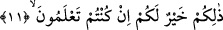

11. Allah’a ve Rasûlüne inanır, mallarınızla ve canlarınızla Allah yolunda cihad
edersiniz. Eğer bilirseniz, bu sizin için daha hayırlıdır.
Âyette malla cihadın canla cihaddan önce getirilmesi, malın cihadda öncelikli
olduğundan veya önem bakımından en düşüğünden en yükseğine geçiş içindir.
Âlimlerin bazısı malın önce zikredilmesi konusunda, “bazı kere insan canını fedâ
etmekte cimirilik eder, mal olunca onunla cihad edecek insan tutulur” demişlerdir. Âyet-
i kerîme’nin bu bölümü, yerine getirilmesi gerektiği bildirilmek üzere getirilen emir
anlamında bir haberdir. Sanki önce emir verildi, sonra da verilmiş olduğu bildirildi.
“Allah onlara mağfiret etti, Allah onları bağışlar” cümlelerindeki mağfiret kuvvetle
umulduğu için sanki gerçekleşmiş ve meydana gelmiş gibi gösterilmiştir. “Allah size
esenlik versin; Allah size âfiyet ihsan etsin ve Allah sizi himaye etsin” cümleleri buna
kıyaslanabilir. Hadis-i şerifte de: “Müşriklere karşı mallarınızla, canlarınızla ve
lisanlarınızla cihad edin!” buyrulmuştur.[114] Dille cihad etmenin anlamı, istemedikleri,
sevmedikleri şeylerle onları yermek ve kabalıklarını duyurmak, onlara güç gelecek
sözler işittirmektir. Dil ile cihadın sona bırakılışı, savaş şekillerinin en zayıf ve hafifi
olduğu içindir. Şöyle demek de mümkündür: Dil, insanı etkilemek bakımından ok ve
kılıçtan daha ağırdır. Nitekim Ali (r.a.); “Okların yaraları onulur, iyileşir ama dilin
açtığı yara iyileşmez” demiştir. Bu mânâda alınırsa, âyette bildirilen savaş şekillerinin
en hafifinden en ağırına doğru yükselmek olur. Rasûlullah’ın (a.s.) izniyle şairi Hassan
(r.a.) minbere oturur ve Kureyş müşriklerini hicveder, yererdi.
Bu açıklamalardan sonra ticaret, ana sermayeyi kâr etmek için kullanmaktır. Tacir,
alım satım işlemlerini yapan kimsedir.
İbnu’ş-Şeyh şöyle der: Acı veren azabdan kurtulmak için Allah’a ve Rasûlüne îman
ile mal ve canla cihad etme olayı, daha çok ve değerlisini elde etmek arzusuyla bir şey
verip karşılığını alma anlamında ticarete benzetilmiştir. Çünkü ticaret, kâr arzusuyla bir
mala karşılık diğer bir mal almaktır. Mal ve canı Allah’ın rızâsını kazanmak ve
azâbından kurtulmak arzusuyla fedâ etmek bakımından âyetteki îman ile cihad buna
benzetilmiştir.
Hâfız demiştir ki:
Malımızı ve canımızı sevgiliye fedâ etmedik yazık,
Aşk yolunda bu kadar gösteremedik fedâkârlık.
“Eğer bilirseniz bu” anlatılan îman ile cihaddan her ikisi “sizin için” her yönden
mutlak olarak veya mallarınızdan ve canlarınızdan “daha hayırlıdır.” Yâni eğer siz
ilim ehlinden iseniz, çünkü câhillerin fiillerine itibar edilmez. Yahut bu anda îman ve
cihad etmenin sizin için daha iyi olduğunu bilir ve inanırsanız îman ve cihadı
canlarınızdan ve mallarınızdan daha çok seversiniz. Böylece kurtulur ve zafere